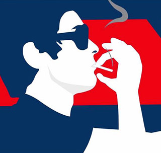

Centres d'intérêts
Sport

Le sport est un ensemble d'exercices physiques ou mentaux se pratiquant sous forme de jeux individuels ou collectifs pouvant donner lieu à des compétitions.
Actualité sportive
Design
Le design est un processus intellectuel créatif, pluridisciplinaire et humaniste, dont le but est de traiter et d'apporter des solutions aux problématiques de tous les jours, petites et grandes, liées aux enjeux économiques, sociaux et environnementaux.
Ecv
Cuisine

La cuisine est l'ensemble des techniques de préparation des aliments en vue de leur consommation par les êtres humains. La cuisine est diverse à travers le monde, fruit des ressources naturelles locales, mais aussi de la culture et des croyances, du perfectionnement des techniques, des échanges entre peuples et cultures.